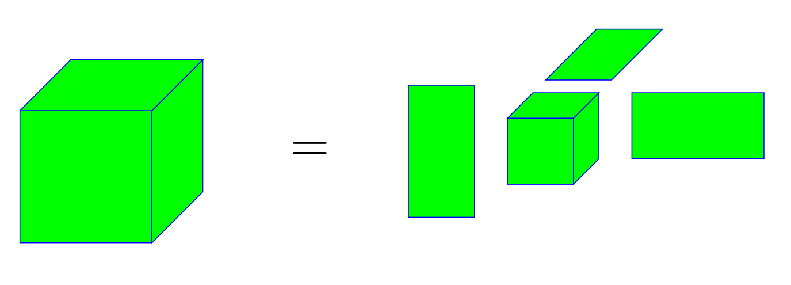

In the last few decades, the rate of operations of computing systems has improved
drastically but we have noticed relatively smaller improvement in the rate of
data transfers. The current computing systems face bottleneck due to the large
volume of data transfers. One of the promising approaches to solve this problem
is to design algorithms which minimize the data transfers. The goal of this course
is to present a variety of such algorithms for matrix and tensor computations.
Tensors are multi-dimensional arrays and arise in several domains, e.g., data
mining, neurosciences, quantum computing, molecular dynamics and computer vision.
The course will present several tensor computations in detail.

Tucker decomposition of a 3-dimensional tensor.
The course will also discuss various approaches to compute communication lower
bounds (that determine how much data transfers are required) for different matrix
and tensor computations. Establishing communication lower bounds helps one to
identify efficient algorithms that exactly attain the bounds.
Part 1: Communication lower bounds and optimal algorithms for matrix computations
In this part, we will first study the seminal work of Hong and Kung (from 1960s)
to determine the minimum data transfer between levels of a memory hierarchy on a
sequential machine (a single processor).
After that, we will review other approaches to obtain communication lower bounds on sequential
and parallel systems. We will also study some algorithms for both types of systems which attain the
lower bounds.
Matrix multiplications
Pebble games
Data transfer cost models
Memory dependent and independent communication lower bounds
Communication avoiding sequential and parallel algorithms
2D/2.5D/3D algorithms
Strassen's matrix multiplications
Matrix factorizations
Part 2: Tensor computations
In this part, we will first look at tensor notations and different types of popular
tensor operations. After that, we will study widely used tensor decompositions and
different algorithms to compute them. We will also analyze the bottleneck computations
of various tensor decomposition algorithms and discuss parallel and communication
optimal approaches for those computations.
Tensor notations
Use of tensors in data analytics and quantum computing
Matricized tensor times Khatri-Rao product computations
Multiple tensor times matrix computations
Part 3: Guest lectures on related popular topics
We will have some lectures on related topics from experts.
Sparse matrix and tensor computations
Hierarchical and block low-rank matrices
Randomized methods to improve algorithmic costs
We will also look at several interesting research projects in the course
related to matrix/tensor computations in high performance computing, machine learning,
data analytics, molecular simulations and quantum computing.
Prerequisite
Experience with algorithm analysis and mathematical optimization will be helpful,
but not required.
Lecture notes
Lecture 1 (Sep 10): Overview of the course slides
and sequential matrix multiplication slides.
Suggested reading pdf.
Assignment 1 is out with two questions (please see the slides), and it is due by Sep 19.
Lecture 2 (Sep 12): Costs of some MPI collective routines slides.
Lecture 3 (Sep 17): Parallel matrix multiplication slides. Suggested reading pdf. Assignment 2 is out (please see the slides), and it is due by Sep 26.
Lecture 6 (Sep 26): Remaining portions of matrix factorizations.
Lecture 7 (Oct 01): Introduction to tensors slides. Suggested reading pdf. Assignment 3 is out (please see the slides), and it is due by Oct 10. If the unfoldings of the specified tensor are not vey clear, please have a look at all the three unfoldings here.
Lectures 8-9 (Oct 03 & Oct 8): Low rank approximations of tensors slides.
Lecture 10 (Oct 10): Implementation of sequential LU and Householder QR factorizations qr_file.
Lecture 12 (Oct 17): It will be on Multiple tensor times matrix computations.
Acknowledgement: I am extremely thankful to Grey Ballard and Loris Marchal for sharing source files of slides of their courses. I am using some of their slides in this course.
Evaluation
The evaluation will be based on the following weightings:
4 homework assignments (best 3 would be counted): 40%
Project (60%): A list of selected research topics/papers will be provided.
Each student or a group of 2 students will prepare a report and give a presentation for one of these.
Course project for the final evaluation
Each student or a group of two students will prepare a 5-6 pages report and give a presentation for one of the below topics/articles. Project report is due by Nov 5.
Email me your or your group choice (or propose another topic/article) by Oct 15 .
Research topics
Communication costs of a specific matrix factorization (LU, QR, TSQR, RRQR, ...)
Extending a specific matrix factorization for tensors
Use of tensors in a particular domain, for example, neuroscience, data analysis, molecular simulations, quantum computing, face recognition, ...